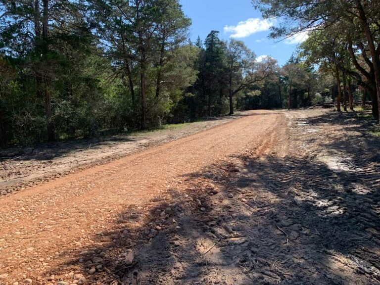

About Starr landworks
At Starr Landworks, we’re more than just a land-clearing company—we’re your trusted partner in creating and maintaining a productive, beautiful property. Founded with a passion for helping farmers and ranchers, our team is dedicated to providing top-tier shrubbing services that are both effective and environmentally responsible.
Our Mission
Our mission is simple: to make land management easier and more efficient for property owners across Texas. By combining cutting-edge equipment with eco-friendly practices, we help our clients reclaim their land, reduce regrowth, and achieve long-term results that save time and resources.
Why Choose Us?
- Local Expertise:Based in Texas, we understand the unique challenges of managing land in this region.
- Eco-Friendly Solutions:We prioritize sustainable methods that protect your land while preventing unnecessary regrowth.
- Reliable Services: From initial consultations to follow-up treatments, our team is here to support you every step of the way.
- Tailored Solutions:Every property is unique, and we create customized plans to meet your specific needs.
Phone: (432) 935-4837
E-mail: contact@starrlandworks.com